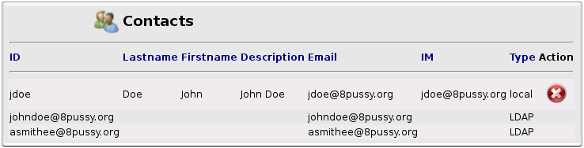
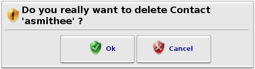
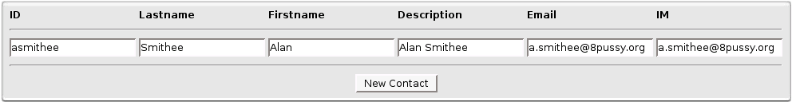

Contacts
Contacts
Here you can configure your Contacts.
Contacts are used to send  Alerts and
Alerts and  Reports by Email and Instant Message.
Reports by Email and Instant Message.
On the top of this page, you can see all your Contacts list (Local & LDAP).

Contacts List
To disable or enable LDAP Contacts, go to  'System Configuration'.
'System Configuration'.
Of course, you can only  remove Contacts defined locally in Octopussy.
remove Contacts defined locally in Octopussy.
Every time you will remove a Contact, a dialog window will ask you to confirm.

Dialog Window Confirmation
On the bottom of this page, you can add a new Contact.

New Contact Box
You need at least to fill the 'ID' and 'Email' or 'IM'(Instant Messaging) fields to have a valid Contact.